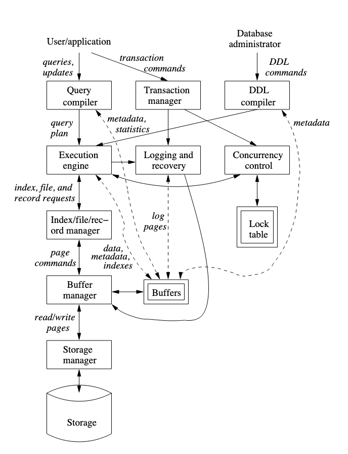

Teórica - 17/08
Ausente. Pongo un resúmen del primer capítulo de Database Systems: The Complete Book y del capítulo 2 del Principles of Database and Knowledge Base Systems
Database Systems: The Complete Book
- Sucintamente, una base de datos es una colección de información que se mantiene por un período de tiempo (por lo general largo).
- Es una colección de datos que es manejada por un DBMS. Este tiene
que permitir y/o asegurar:
- crear nuevas bases de datos y especificar sus schemas
- hacer consultas y modificaciones sobre los datos con un query language o data-manipulation language
- almacenar grandes cantidades de información con acceso eficiente para las operaciones de 2
- persistencia/durabilidad de la información: o sea que se pueda recuperar la data ante fallas
- Aislamiento y Atomicidad de operaciones (o transacciones como se ve más adelante)
... (Un poco de historia)
Overview de un DBMS

Hay 2 tipos de usuarios de la base de datos:
- Usuarios y aplicaciones
- El administrador de la base de datos
Los comandos que uno y otro ejecutan toman distintos flujos dentro del dbms aunque comparten subsistemas en común.
Data-Definition Language Commands
El administrador usa un DDL (Data Definition Language) para definir la estructura y constraints de las tablas. Estas instrucciones las parsea un procesdor de DDLs y se envían el execution engine, y hacia los index/file/record managers.
Procesamiento de Queries
El usuario en cambio usa un DML (Data Manipulation Language) para armar consultas que modifican o extraen información de la base de datos. Estas consultas las atienden dos subsistemas:
- Query: El primer subsistema consiste en el query compiler + execution engine + buffer manger, y se encarga de la respuesta en sí de la query.
- Transacciones: Las transacciones son operaciones que se tienen
que realizar de forma atómica y aisladas unas de otras (da lo mismo
si ejecutan al mismo tiempo que si no), y a su vez estas tienen que
poder ser persistidas. El subsistema que se encarga de procesar
transacciones entonces está compuesto por:
- Un scheduler, para garantizar atomicidad y aislamiento
- Un logging & recovery manager para la persistencia de las transacciones
Manejo de almacenamiento y buffers
A esto lo componen dos piezas:
- El storage manager, que sirve de interfaz entre el disco y el resto del DBMS
- El buffer manager, que maneja la memoria principal (RAM) organizándola en buffers en los que se cargan:
- Data
- Metadata
- Log Records
- Estadísticas
- Índices
Procesamiento de transacciones
El subsistema que procesa transacciones se encarga de 3 tareas:
- logging, en el que se escribe un log en disco cada cambio en la base de datos. Esto sirve para garantizar persistencia de las transacciones. El log manager usa alguna política para que en conjunto con el recovery manager se pueda restaurar la DB a un estado consistente en caso de fallas.
- concurrency control, manejado por el schedular que mantiene locks sobre los recursos.
- deadlock resolution. De esto se encarga el transaction manager, cancelando algunas transacciones hasta que se liberan los recursos necesarios como para continuar con la ejecución.
Propiedades ACID:
- A de atomicity de la ejecución de transacciones.
- I de isolation ya que las transacciones se tienen que ejecutar como si ninguna otra se haya ejecutado en el medio
- D de durability ya que las transacciones no deben perderse
- C de consistencia (ojo, con el surgimiento de bases de datos distribuidas/sistemas distribuidos, se fue transicionando a otros esquemas en donde no necesariamente se garantiza consistencia si no algo un poco más débil. Para más info buscar sobre CAP theorem)
Query Processor
Al query processor lo componen dos partes:
- El query compiler, que consiste de un parser, preprocessor y un optimizer para las queries y genera un query plan.
- El execution engine al que le llegan los query plans y tiene que llevarlos a cabo.